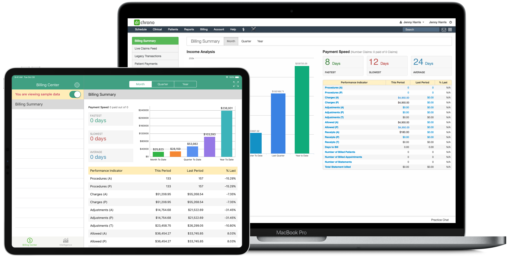

DrChrono Revenue Cycle Management - Pain Free Billing
In this age of reduced reimbursements, having the right medical
billing partner is incredibly important to ensure you get paid
quickly and accurately. We are confident that once you learn
about our expertise and proven results, DrChrono will be your
billing service of choice. Continue reading on to learn about our
full service medical billing solution.
DrChrono RCM vs. Others
| DrChrono | athenahealth | eClinicalWorks | CareCloud | HealthFusion(NextGen) | Kareo | |
| EHR & RCM on One Unified System | ||||||
| Dedicated Account Manager | ||||||
| Integrated Medical Billing iPhone/iPad Technology | ||||||
| Medical Coding Services | ||||||
| Customizable Billing Profiles |
Invest More Time into Patient
Care with Full Service Medical Billing
-
Beware of the limited services that other billing companies offer. At DrChrono, we believe that providers should spend their time caring for patients, not chasing down payments. DrChrono’s integrated EHR lets our billing team take over as soon as a provider completes patient charting.
-
Experienced and certified medical coders: our coders review clinical notes and code your claims correctly. Additionally, we coach doctors on compliantly optimizing charting for claims.
-
Excellent clean claim submission rate: our billing team reviews all claims before they are submitted to your clearing house in order to increase a provider’s first pass payment ratio. Our senior billers review and re-submit rejections within 48 hours. Our team also works closely with clearing houses and insurance companies in order to get your claims paid on time.
-
Simplified credentialing: our services include credentialing, re-credentialing, and network participation amongst other things. Our goal is to simplify the process and reduce the costs and frustration associated with credentialing.
-
Expert Electronic Remittance Advice review: our billing experts review all payments to ensure proper reimbursement per doctor contracts.
-
Speedy accounts receivable follow-up: our team followsup with insurance companies as opposed to the standard method of aging claims. This allows us to recover payments quickly; in fact, more than 96% of our claims are paid in less than 60 days!
-
Specialty-specific denial analysis, resolution and prevention: we are well versed in denial resolution by speciality. To ensure most claims are paid without a denial, we monitor denials for trends. We then train and educate your team to make appropriate changes in their workflow to reduce future insurance denials.
-
Multi-Insurance appeals specialization: we have extensive experience across all kinds of appeals, including those for federal, commercial, workers compensation and auto insurance.
-
Real time eligibility at the time of patient check-in: we educate and train doctors and their staff to utilize this feature effectively in order to collect payments upfront.
Gain Insight Into Your
Cash
Flow
Just because a practice’s billing is outsourced doesn’t
mean that providers need to be in the dark regarding
billing activity, cash flow, and other key billing measures.
The DrChrono reporting center gives our providers an easy
way to understand their billing. Our reporting center can
be accessed in one-click via the DrChrono EHR; reports are
easy to understand, up-to-date and incredibly powerful in
allowing a providers to understand a practice’s financial
performance.
-
Completely Integrated EHR & Billing Provides Visibility. Our EHR was built-in tandem with our billing system in order to ensure that both the EHR and billing system are seamlessly integrated.
-
Doctors, and their designated staff have 24/7 access to billing statistics and analytics. With the click of a button on the DrChrono EHR, doctors can view easy to understand snapshots and reporting of payments, denials and cash flow.
-
Billers have access to patient charts, which is invaluable in boosting practice revenue. With an integrated system, billers can easily analyze charting and work-flow practices and quickly advise a provider or their staff on modifications needed to optimize billing outcomes.
-
Patients have online access to their medical records. Thanks to our integrated system, patients are able to log-in to our patient portal, onpatient.com, and see their clinical summary, book appointments and view and pay their statements online.
Dedicated Team of Billing
Experts At Your Service
-
Each RCM team member is an expert in billing. Each of our billers has multiple years of hands-on experience with single if not multiple certifications in coding, auditing and billing.
-
Our billing team is very accessible. They can be contacted easily via a dedicated toll free number and email. In addition, you will have regularly scheduled calls with your dedicated Account Manager and receive a monthly performance reporting package.
-
Specialty specific billing capabilities - DrChrono’s billing team has specialty-specific experts on board such that we can optimally bill for any practice.
A Profitable Story
DrChrono’s managed billing services have
helped thousands of our clients increase their
revenues dramatically.
One illustrative example is that of a Boston based
family practice that grew their revenues
significantly after adopting DrChrono, without
any change in appointments or number of clients.
DrChrono’s billing team is able to provide clients
with significant revenue improvements for two reasons:
-
We are able to collect a greater amount of your billings than most in-house or specialty billing companies
-
The cost of our services is far lower than what most providers pay an in-house biller or billing company
Before: In-Hourse Biller
| Total Insurance Eligible Billings per Month: | $26,000 |
| Total Amount Collected per Month via an In-House Biller: | $18,200 |
| Total Monthly Cost of In-House Biller(includes benefits): | $6,176 |
| Total Annual Collections, Net Cost of Biller | $144,288 |
After: DrChrono's Managed Billing Services
| Total Insurance Eligible Billings per Month: | $26,000 |
| Total Amount Collected per Month via DrChrono: | $22,100 |
| Total Monthly Cost of DrChrono: | $1,820 |
| Total Annual Collections, Net Cost of DrChrono | $243,360 |
Revenue Improvement with DrChrono:
$99,072
About DrChrono
#1 Mobile EHR by Black book 2013-2018
Best in KLAS Category Leader by KLAS 2017
13
+
Million
#1 Mobile EHR by Black book 2013-2018
All-in-One, Cloud-Based EHR on iPhone,
iPad, and Web
-
Seamlessly integrated scheduling, EHR and medical billing software that minimizes multiple data entries and billing errors.
-
Easily and securely transfer your old EHR data into DrChrono.
-
Mobile patient check-in app and self check-in kiosk on iPad.
-
eRx with EPCS and over 40,000 labs and imaging centers integrated.
-
Speed up charting with customizable medical forms, prebuilt specialty forms, free draw, medical speech-to-text, and direct DICOM image viewer within the EHR.
-
EHR software included at no cost with RCM plan.
Have any questions about DrChrono RCM or interested in scheduling a demo? Please email us at rcm@drchrono.com.